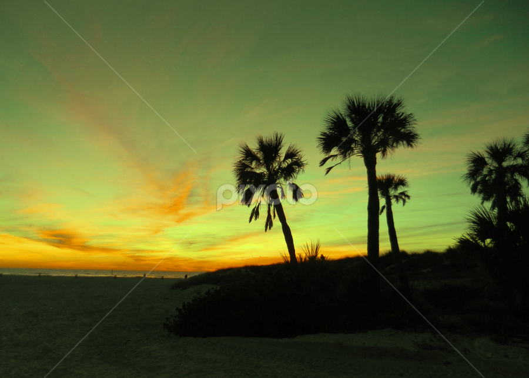

Experiment 2 - Living Impressions
Description
This project seeks to create a generative, living experience of the following image:

Source
Technical
Relation to inspring image:
- Color: The sky, grass, tree, sun, clouds, water, and sand were sampled from the image using the Photoshop eyedropper tool.
- Primitives: The trees are rendered with `quad` primitives for the trunks, and `triangles` for the leaves. The sun and clouds are both `ellipses`. The water and sky are `rect` primitives. The sky gradient is achieved using `lines`.
- Polygons: Both the sand and the grass are single randomly polygons using `vertex` calls. The left edge of the grass is a single randomly polygon with `curveVertex` calls.
- Composition: Different random seed values lead to differently shaped sand and grass. It changes the placement, shape, and number of the trees. It also changes the placement, shape, number, speed, and color of the clouds.
- Life: The position of clouds is animated over time, and the cursor's Y position affects the sun placement and the sky gradient.
Reflection
The hardest part about this project was how to design trees and gradients. It was difficult to emulate palm trees with random leaf structures, so I had to change the type of tree. In terms of gradients, it could have been used more widely in this project, but I felt as if it was best kept for the sky since the sun's position can change. Also, make sure you scale everything in relation to a variable, and don't hardcode values!